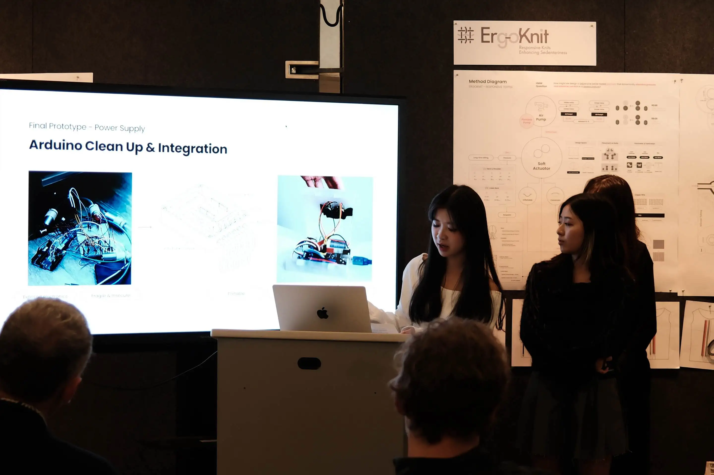
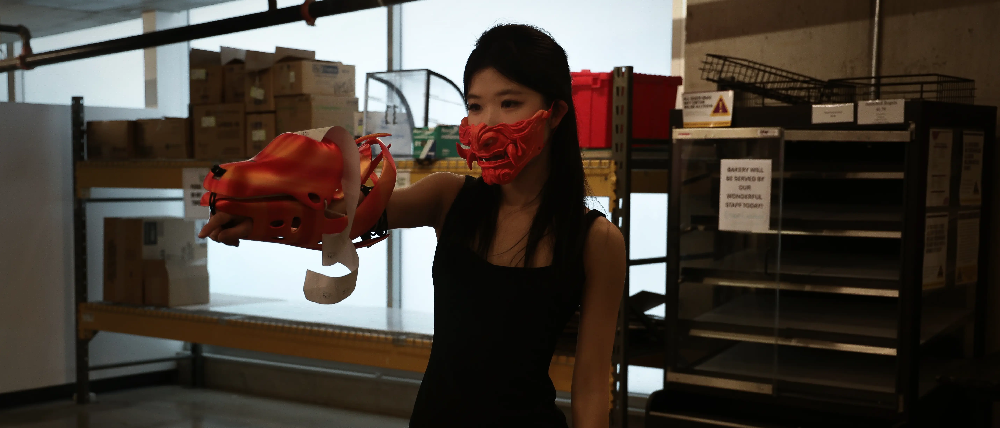

我是Sissi 郑泳诗
本科毕业于纽约大学，现在康奈尔大学就读理学硕士：M.S. Design Technology。
随着交互设计师的身份光速迭代更新，我深耕了我领域与定位：一位技术开发能力与美学兼具的体验设计师。
我擅长将问题化为清晰的信息架构与可验证的用户体验。结合我的海内外学业经验和行业视野，我不断掌握新技术，扩充我的设计可能性和贴合用户视角。
我擅长将问题化为清晰的信息架构与可验证的用户体验。结合我的海内外学业经验和行业视野，我不断掌握新技术，扩充我的设计可能性和贴合用户视角。
sissiqwq3

